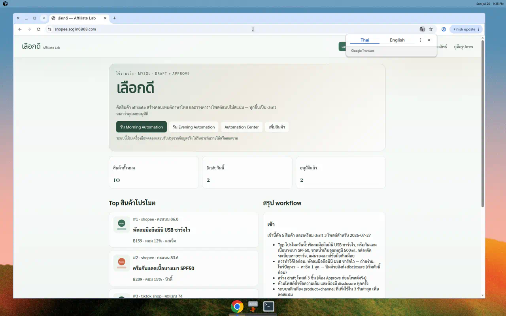
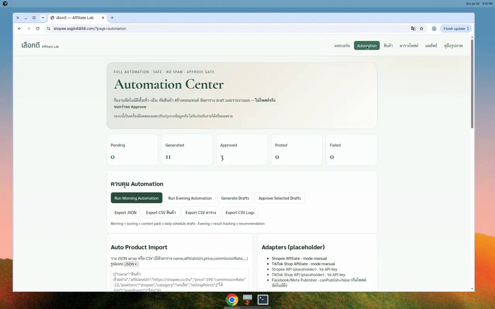
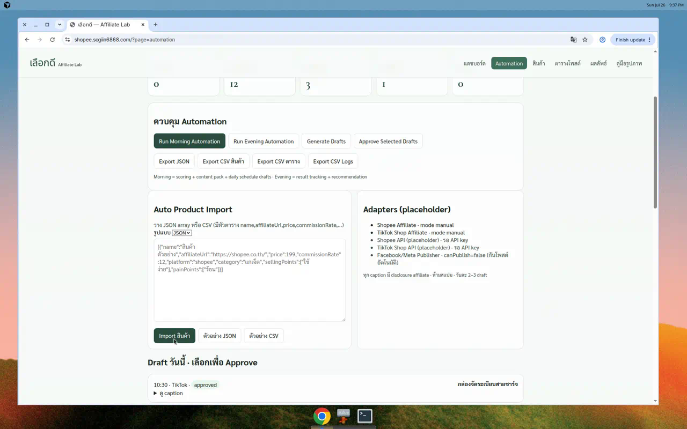
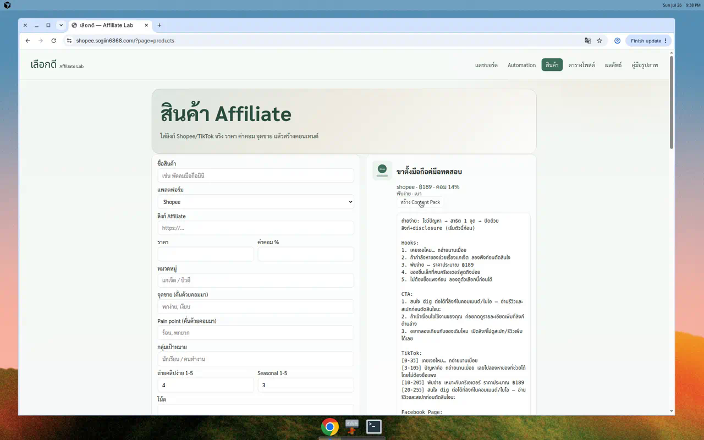
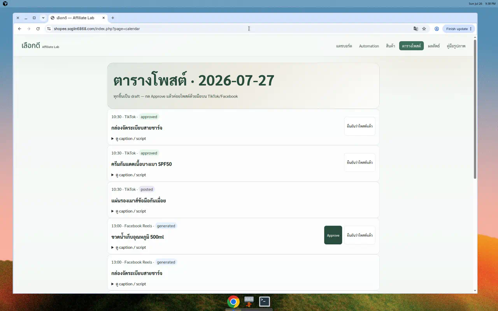
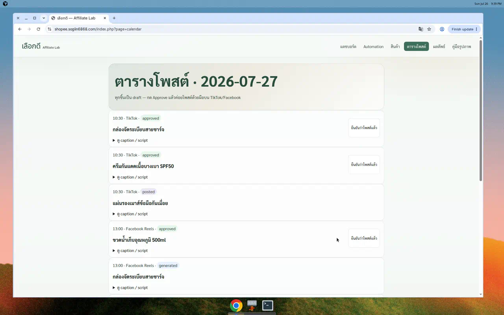
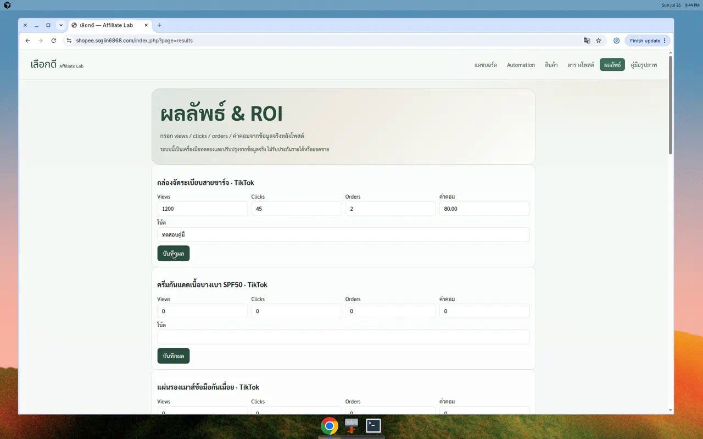
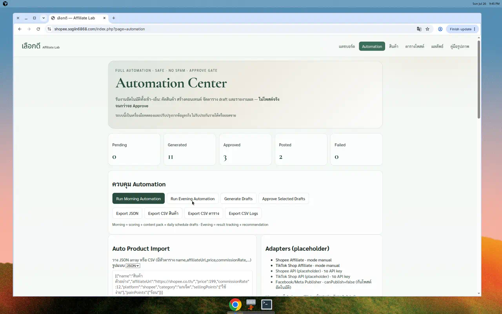
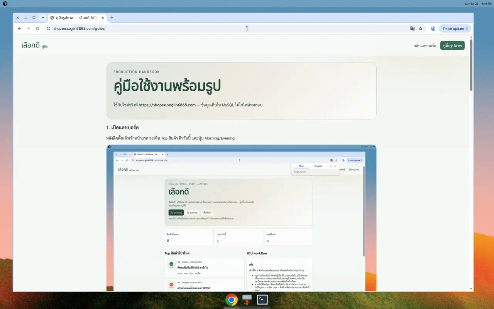

Verified on live site
คู่มือใช้งานทีละขั้นตอน
ทดสอบจริงบน https://shopee.sogiin6868.com แล้วถ่ายรูปแต่ละขั้น — ใช้ตามลำดับนี้ได้เลย
ใช้ได้จริง: Morning → Import → สร้างคอนเทนต์ → Approve → กรอกผล → Evening (ไม่โพสต์อัตโนมัติ)
เปิดแดชบอร์ด
เข้า https://shopee.sogiin6868.com/ จะเห็นยอดสินค้า / draft / ปุ่ม Morning–Evening

ขั้นที่ 1 — หน้าแดชบอร์ดโหลดภาษาไทยปกติ
เปิด Automation Center
คลิกเมนู Automation หรือไปที่ หน้า Automation

ขั้นที่ 2 — ปุ่ม Morning / Evening / Generate Drafts / Approve / Import / Log
รัน Morning Automation
กด Run Morning Automation ระบบจะคัดสินค้า สร้าง content และจัด draft ประจำวัน (ยังไม่โพสต์จริง)
ขั้นที่ 3 — หลังรัน Morning สถานะ generated เพิ่มขึ้น และมี log
Import สินค้าจาก JSON
ในช่อง Auto Product Import เลือก JSON แล้ววางข้อมูลสินค้า → กด Import สินค้า

ขั้นที่ 4 — นำเข้าสินค้า affiliate หลายรายการได้ (CSV ก็รองรับ)
สร้าง Content Pack
ไปเมนู สินค้า → กด สร้าง Content Pack จะได้ hooks, CTA, สคริปต์ TikTok, Facebook, hashtag + disclosure

ขั้นที่ 5 — คอนเทนต์ภาษาไทยพร้อมใช้ น้ำเสียงช่วยเลือกของ
ดูตารางโพสต์ (Draft)
ไปเมนู ตารางโพสต์ ดูคิววันนี้ สถานะจะเป็น generated/approved/posted

ขั้นที่ 6 — ทุกชิ้นเป็น draft ก่อน จนกว่าจะ Approve
Approve ก่อนโพสต์จริง
กด Approve ที่ draft ที่ต้องการ แล้วคัดลอก caption ไปโพสต์ด้วยมือบน TikTok/Facebook

ขั้นที่ 7 — สถานะเปลี่ยนเป็น approved (ระบบไม่โพสต์ให้อัตโนมัติ)
บันทึกผลลัพธ์จริง
ไปเมนู ผลลัพธ์ กรอก views / clicks / orders / ค่าคอม แล้วกดบันทึก

ขั้นที่ 8 — ตัวอย่างกรอก views 1200, clicks 45, orders 2, ค่าคอม 80
รัน Evening Automation
กลับ Automation Center → กด Run Evening Automation เพื่อดูรายงานและคำแนะนำวันถัดไป

ขั้นที่ 9 — สรุปผล + recommendation (ไม่การันตีรายได้)
เปิดคู่มือในเว็บ
หน้านี้คือคู่มือที่อัปเดตจากภาพทดสอบจริง

ขั้นที่ 10 — คู่มือพร้อมรูปบนเว็บ
สรุปผลทดสอบ
- แดชบอร์ด / Automation / สินค้า / ตาราง / ผลลัพธ์ เปิดได้
- Morning / Import / Content Pack / Approve / บันทึกผล / Evening ใช้งานได้จริง
- ไม่มี auto-post — ต้อง Approve แล้วโพสต์ด้วยมือ
- ทุก caption มี disclosure affiliate
ระบบนี้เป็นเครื่องมือทดลองและปรับปรุงจากข้อมูลจริง ไม่รับประกันรายได้หรือยอดขาย